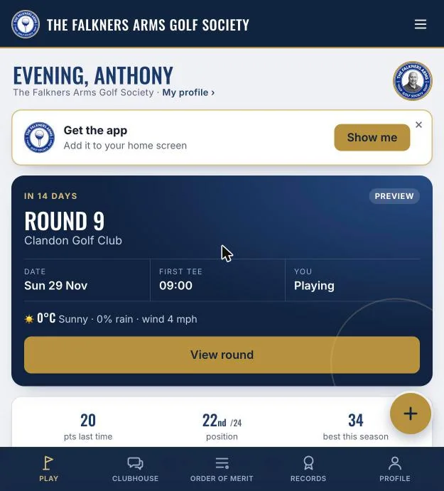
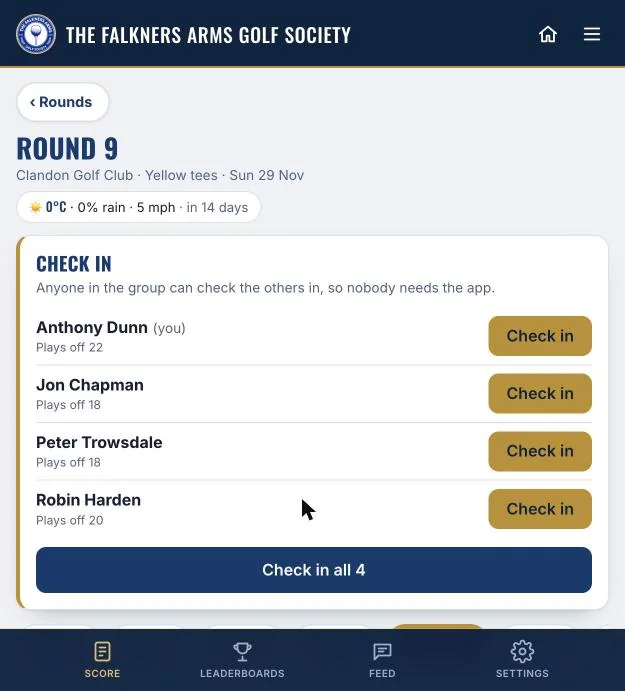
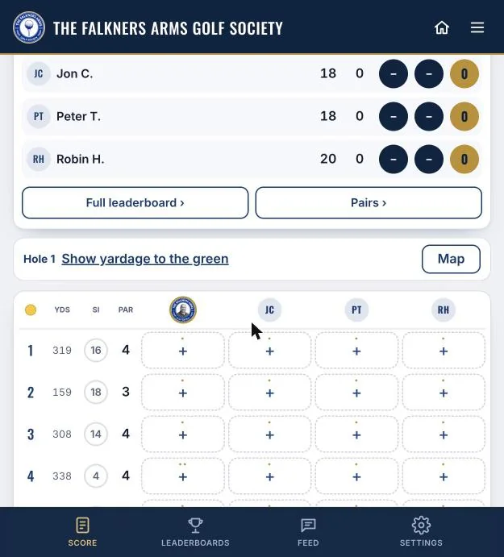
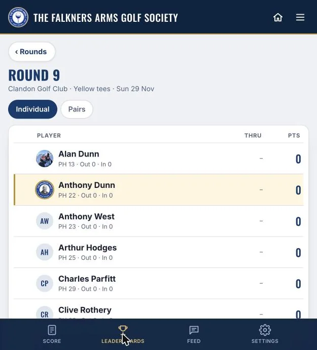
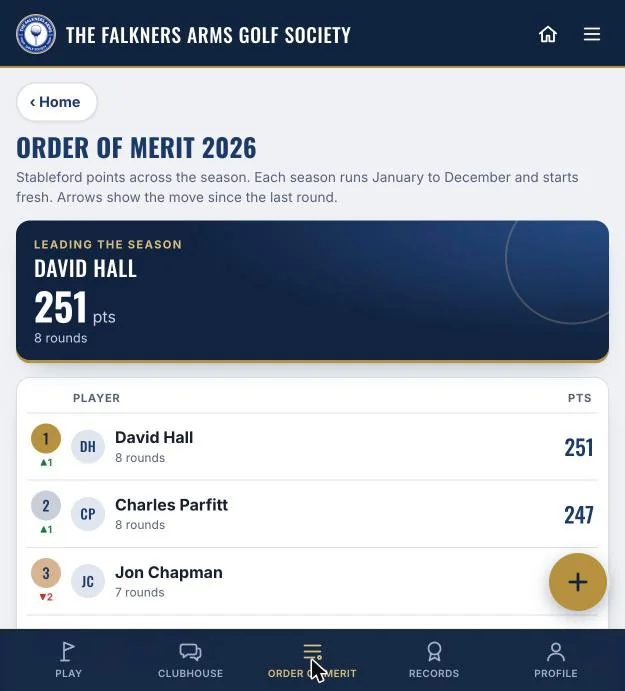

Live demo · Members only
The Falkners scoring app
An installable web app for the same society, sitting behind the member login. Five screens from the real thing, in the order a Sunday actually happens.





-
Before you leave the house
Round 9 at Clandon, first tee at nine, and the forecast for it. It already knows you are playing, what you scored last time and where you sit in the season.
-
One phone checks the group in
Anyone in the fourball can check the others in. Members who will not install an app, or cannot work their phone, still get a scorecard and still appear on the leaderboard.
-
Score the hole for anybody
Yardage, stroke index and par down the side, a column per player across. The dots show where each player’s shots fall, so nobody has to remember who gets one where.
-
The leaderboard moves while you play
Playing handicaps come off the slope and course rating at the society’s own allowance. Points land as they are entered, individually and in pairs, on the same card.
-
The season keeps itself
Stableford points roll into the Order of Merit the moment a card is in. No spreadsheet, and no committee member typing up scorecards on a Monday night.
Every screen above is the live app, not a mock-up. It is members only, which is why there is no public link to it — the public side of the same database is the season leaderboard.